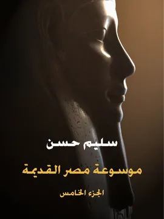

موسوعة مصر القديمة (الجزء الخامس): السيادة العالمية والتوحيد

قراءة عربية أصلية محددة النطاق في الصفحات 7، 8 من ملف PDF المرتبط، وليست تلخيصا كاملا للكتاب. نناقش ما تدعمه هذه المقاطع فقط.
من الحسام إلى المصاهرة
يفتتح سليم حسن تمهيده: كانت آخر مرحلة وصلنا إليها في مطافنا في تاريخ أرض الكنانة وحضارتها في الجزء السالف هي عصر «أمنحتب الثاني»، الذي يعد في نظر المؤرخين بحق آخر أبطال فراعنة مصر الذين امتشقوا الحسام ودوّخوا الأمم المجاورة التي خرجت على الحكم المصري في النصف الأول من الأسرة الثامنة عشرة؛ فقد كانت مدة حكمه خاتمة عهد الحروب الطاحنة التي بدأها «أحمس الأول» في آسيا، وفاتحة عصر جديد في تاريخ مصر والشرق معًا. ولا نزاع في أن عهد خلفه «تحتمس الرابع» كان باكورة مرحلة جديدة في حياة الشعب المصري وحضارته، امتازت بطابع جديد لم يُعهد من قبل في تاريخ الأمة المصرية منذ فجر تاريخها؛ فقد أغمد فراعنتها السيوف في قرابها، وبدءوا يجنون ثمار تلك الانتصارات الساحقة والفتوح الشاسعة التي أحرزها آباؤهم الفاتحون، وعلى رأسهم «تحتمس الثالث» المؤسس الأعظم للإمبراطورية المصرية، أول إمبراطورية في العالم.
زاوية وحدود القراءة
قراءة في مطلع تمهيد الجزء الخامس (ص 7-8 من الملف)، ولا تدعي تلخيص أجزاء الموسوعة أو أطروحتها عن التوحيد كاملة.
الطبعة والقراءة
[1] موسوعة مصر القديمة (الجزء الخامس): السيادة العالمية والتوحيد | سليم حسن | مؤسسة هنداوي — safahat.org https://www.safahat.org/books/18097928/ موسوعة مصر القديمة (الجزء الخامس): السيادة العالمية والتوحيد | سليم حسن | مؤسسة هنداوي # الكتب ![](https://down
تنزيل PDF المجاني ↓ القراءة والمصدر الرسمي ↗